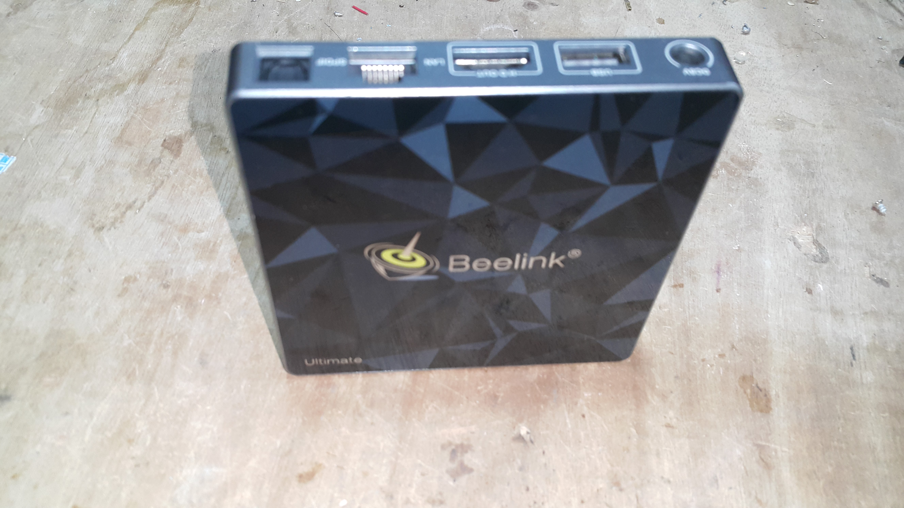

Beelink gt1 (Ultimate) (beelink-gt1)
| some Beelink gt1 (Ultimate) didnt come with a os. |
|
 Beelink gt1 Ultimate | |
| Manufacturer | Beelink |
|---|---|
| Name | gt1 (Ultimate) |
| Codename | beelink-gt1 |
| Released | 2016 |
| Category | testing |
| Original software | Android/None |
| Original version | 7 |
| postmarketOS kernel | linux-edge |
| Hardware | |
| Chipset | Amlogic S912 |
| CPU | 8x Cortex-A53 1.5 GHz |
| GPU | Mali-T820 MP3 |
| Display | HDMI 2.1 |
| Storage | 16/32GB EMMC + SDCard |
| Memory | 3GB/ 2GB |
| Architecture | aarch64 |
| Type | TV BOX |
{kind=link}
| USB Networking |
Unavailable
|
|---|---|
| Flashing | |
| Touchscreen |
Unavailable
|
| Display |
Works
|
| WiFi |
Works
|
| FDE |
Partial
|
| Mainline |
Works
|
| Battery |
Unavailable
|
| 3D Acceleration |
Works
|
| Audio |
Works
|
| Bluetooth |
Works
|
| Camera |
Unavailable
|
| GPS |
Unavailable
|
| Mobile data |
Unavailable
|
| SMS |
Unavailable
|
| Calls |
Unavailable
|
| USB OTG |
Unavailable
|
| NFC |
Unavailable
|
| Accelerometer |
Unavailable
|
|---|---|
| Magnetometer | |
| Ambient Light | |
| Proximity | |
| Hall Effect | |
| Barometer | |
| Power Sensor | |
| Camera Flash | |
|---|---|
| Keyboard | |
| Touchpad | |
| USB-A |
Works
|
| HDMI/DP |
Works
|
| Ir TX |
Unavailable
|
| Ir RX | |
| Stylus | |
| Haptics | |
| Ethernet | |
| FOSS bootloader | |
| Primary Bootloader |
Works
|
|---|---|
| Secondary Bootloader |
Works
|
| Mainline |
Works
|
| Internal Storage |
Works
|
| SD card |
Works
|
| USB Host |
Works
|
| USB Peripheral |
Works
|
| Display |
Works
|
| Keyboard |
Works
|
| Buttons | |
Maintainer(s)
Users owning this device
- Exkc (Notes: 3GB/32GB Got it for HKD$50)
How to enter flash mode and how to connect to a pc
0. unplug the power
1. Connect the usb port on the side to your pc via usb male a to usb male a.
| WARNING: Make sure the 5v vcc pin aint connected in the cable otherwise it might will burn when u plug the cable to it. |
2. Holding this button on the pcb while u power it on and u r done.
{kind=link}
uarl
3v , Baud rate : 115200
{kind=link}
pcb
{kind=link}
Installation (to sdcard)
| WARNING: You have to wipe the stock uboot before you install pm os if your Beelink gt1 (Ultimate) come with a os on the emmc. |
1. Follow the steps on Installation_guide#Initialization
2. Choose the beelink-gt1 device
3. Start the build process and install the completed image to a sdcard
$ pmbootstrap install --sdcard /dev/sdX
(replace /dev/sdX with the device for your sdcard)
4. Place the sdcard into the Beelink gt1 (Ultimate) and boot it.
Installation (to emmc)
1. Install Pm os to sdcard
2. Copy pm os from sdcard to emmc
Boot process
If emmc is bootable :
bootrom ==> emmc ==> uboot ==> postmarketOS
Else if sdcard is bootable :
bootrom ==> emmc ==> uboot ==> postmarketOS
Else :
bootrom ==> flashmode
Gallery

weston\
{kind=link}
Ethernet
The device seem to few revision of the device.Ethernet seem to only work on early revision of the device and the real gt1(there are fake gt1 in the world).
Audio
Hdmi audio work but spdif fiber is untested.
Kernel
There are two that you can use with the device :
Mainline
A patched kernel that made for amlogic device. It has some fix that the alpine kernel dont have but it didnt has fixes /patch to make this work better compare to alpine kernel.
Alpine
Mainline kernel with zero patch
See also
- pmaports!3924 Initial merge request
- Device package
- Kernel package